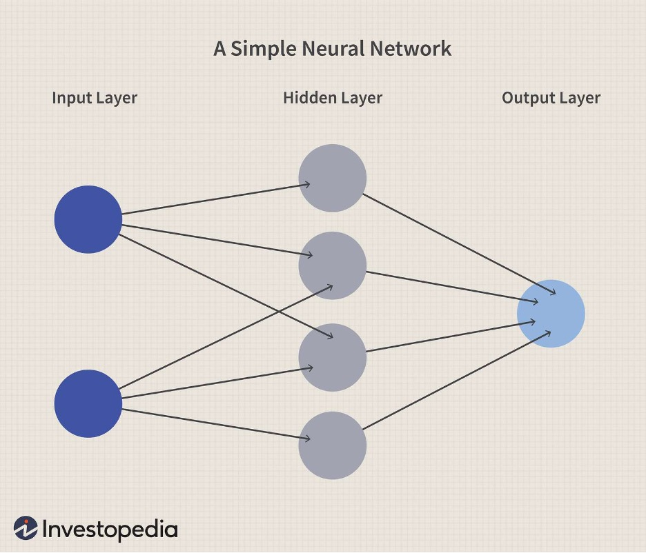
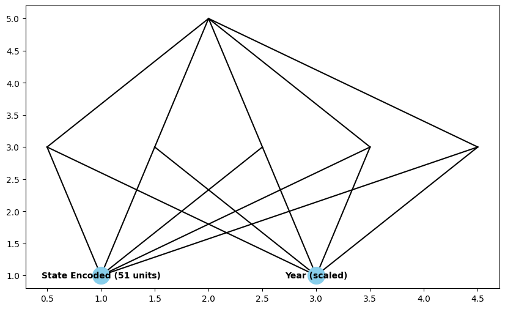
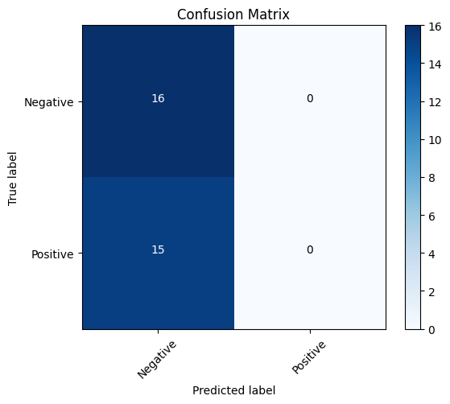
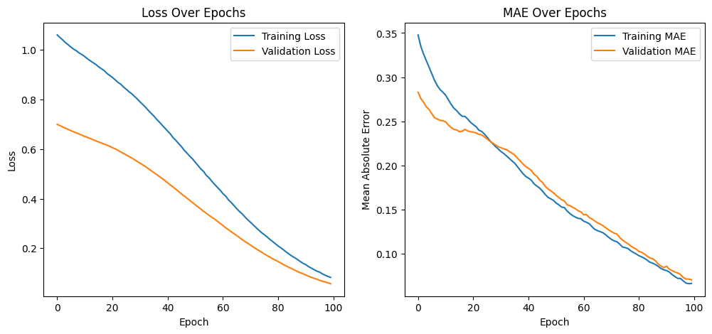

Overview
Neural Networks (NNs) are computational models inspired by the human brain. They are used to recognize patterns and make decisions based on complex data inputs. Below is an example image illustrating a simple NN architecture.
Deep learning is based on neural networks, which are especially good at simulating intricate, non-linear correlations in data. They consist of several layers: an output layer that generates the final results, multiple hidden layers that compute the transformations, and an input layer that receives data. Simple computations are carried out by the units or neurons that make up each layer. To reduce prediction mistakes, throughout the training phase, the weights—a term for the connections between these neurons—are modified.
- Neurons: The NN's fundamental computational units. Every neuron takes in information, processes it with a mathematical function (typically non-linear, such as ReLU or sigmoid), and then sends the result to the layer above.
- Weights and Biases: Network parameters that are acquired through training. While biases change the activation function of the model to make it better suit the data, weights regulate how much of an influence a neuron has over another.
- Activation Function: A function that is used at every neuron to add non-linearities to the model so that it can pick up increasingly intricate patterns.
- Loss Function: A technique for calculating the discrepancy between the data and the predictions made by the network. For regression tasks, mean squared error and for classification tasks, cross-entropy loss are typical instances.
- Backpropagation: The algorithm used for training neural networks, where the output error is propagated backwards through the network to update the weights and biases.
Types of Neural Networks:
- Forward Neural Networks: The most basic kind of artificial neural network in which there are no cycles in the connections between the nodes.
- Convolutional Neural Networks (CNNs): Exceptionally efficient in handling data with a topology resembling a grid, like pictures. To capture spatial hierarchies in data, CNNs employ filters.
- Recurrent neural networks (RNNs): Beneficial for handling text or time series data that is sequential in nature. They contain loops that let information linger.
- Generative Adversarial Networks (GANs): Consisting of two networks that are trained concurrently, a discriminator and a generator. While the discriminator learns to distinguish between actual and fake data, the generator learns to produce data that is comparable to the training set.

Data Preparation
In supervised learning, labeled data is split into a Training Set and a Testing Set. The Training Set is used to build the model, while the Testing Set validates the accuracy of the model. Only labeled data can be used in this method.
Understanding Data Preparation for Supervised Learning: A sort of machine learning called supervised learning uses labeled datasets to train the model. This dataset is made up of input-output pairs, where the labels applied to the data points are the outputs and the inputs are different data attributes. These labels are crucial because they direct the learning process and educate the model how to relate the inputs to the intended result.
Key Steps in Data Preparation:
- Labeled Data: You need to start with a dataset in which there is a label assigned to every entry. This is important because the model learns to anticipate the labels based on the features given in the inputs during supervised learning.
- Data Splitting: Usually, the dataset is split into two sets:
- Training Set: This is the model's training set. Here, the model adjusts its parameters (such as weights in neural networks) to identify patterns in the data.
- Testing Set: Used to assess the effectiveness of the model. This set is essential for evaluating the model's ability to generalize to fresh, untested data.
Why Must Training and Testing Sets Be Disjoint? To guarantee that the model's evaluation is objective and accurately represents its performance on really new data, the training and testing sets need to be disjoint. In the event that there is overlap, the model could not be learning to generalize from patterns in the data, but rather is simply memorizing particular cases.
Example of Labeled Data: Here's a hypothetical snippet of a labeled dataset for a binary classification task, such as distinguishing between cats and dogs from images:
ImageID Image Pixels Label
1 [pixel data] Cat
2 [pixel data] Dog
3 [pixel data] Cat
4 [pixel data] Dog
Splitting into Training and Testing Sets: Here's how you might split this data:
- Randomly select 80% of the data for training to ensure the model learns a broad range of patterns.
- Reserve 20% for testing to evaluate model performance on unseen data.
Code
The Python code below performs NN modeling for classification using Tensorflow/Keras. It includes data reading, model training, and accuracy testing.
Link to the NN Code
Results
The results of the NN modeling are discussed here, including visual representations such as the confusion matrix and the NN architecture.
Deep Dive into the Results
- Converging Loss and MAE: The model's ability to stabilize and learn from the data is demonstrated by the convergence of loss and Mean Absolute Error (MAE) over epochs. However, it's important to monitor for diminishing trends in these indicators as well as any signs of performance divergence between training and validation, which could indicate overfitting.
- Managing the Outputs of Regression: Each output prediction in a regression context can be considered a point estimate of the anticipated number of vehicles. To evaluate how well the forecasts match reality, it is useful to compare the predictions with actual values using scatter plots or line charts.
Advanced Techniques to Improve Model Performance
- Hyperparameter Tuning:
- Number of Epochs: Adjusting the number of training cycles can help identify the optimal point at which the model has learned adequately without overfitting the training data.
- Learning Rate: Modifying the optimizer's learning rate can lead to more stable learning patterns or faster convergence.
- Batch Size: Altering the batch size affects the gradient estimates at each step, which can impact the stability and speed of the learning process.
- Model Architecture Adjustments:
- Increasing Complexity: Adding more layers or neurons may help capture more complex relationships in the data, but this increases the risk of overfitting, especially when the data volume is limited.
- Dropout: Implementing dropout layers by randomly setting a portion of input units to zero at each update during training helps reduce overfitting.
- Feature Engineering:
- Polynomial Features: For regression tasks, adding polynomial features can help capture non-linear relationships without overly complicating the neural network.
- Interaction Terms: Including interactions between features can reveal patterns to the model that are not apparent from individual features alone.
Assessing Model Performance
- Cross-Validation: By averaging results across multiple dataset partitions, K-fold cross-validation provides a more robust assessment of model performance.
- Residual Analysis: Plotting residuals, or the differences between expected and actual values, can identify fit issues such as heteroscedasticity and biases within the model.
Useful Suggestions and Points to Remember
- Deployment Scenarios: Consider the infrastructure required to operate the model and the feasibility of frequent retraining cycles when preparing to deploy a neural network model in a production setting.
- Real-Time Predictions: Ensure that the model's complexity does not hinder performance to the extent that it fails to meet operational requirements for applications requiring real-time predictions.

The accuracy of the model and the effectiveness of the chosen activation functions are also evaluated.


Conclusions
The study and utilization of a neural network to forecast the quantity of electric vehicles (EVs) registered according to state and year yields various significant conclusions and forecasts that are relevant to comprehending the dynamics of EV adoption in various regions over time.
Key Learnings from the Neural Network Model:
- Regional Trends: By incorporating state data into the model, we can learn about regional preferences or policies that significantly impact EV adoption. For instance, states with incentives for electric vehicles might show higher registrations, which the model could implicitly learn and reflect in its predictions.
- Temporal Dynamics: Including the year as a feature allows the model to capture trends over time. This could reveal increasing or decreasing trends in EV adoption, helping to predict future market growth or saturation.
- Modeling Complex Relationships: The use of a neural network highlights its ability to model non-linear and complex relationships that might not be immediately apparent or easily modeled with simpler statistical methods. This capability is crucial when dealing with multifaceted factors influencing EV adoption, like economic conditions, changing technologies, and policy shifts.
Predictions and Implications:
- Future Vehicle Registrations: The number of electric vehicles registered in various states for specific years is the main prediction made by this model. Policymakers, companies, and investors need to know this information in order to comprehend and predict market demands and infrastructure requirements.
- Impact of Policies: Stakeholders can evaluate the efficacy of various incentives and regulations by examining changes in EV registrations over time in response to various state policies. This knowledge can direct future choices about the best way to set up incentives to promote the adoption of EVs.
- Infrastructure Development: Estimating the amount of electric vehicles in various areas aids in the development of infrastructure that is relevant, such as the addition of charging stations and improved grid infrastructure. Potential EV growth hotspots can be identified to enable targeted investments that benefit users and are cost-effective.
Broader Insights:
- Sustainability Goals: Tracking the development of electric vehicle adoption requires an understanding of the patterns and factors that influence it. Since electric vehicles (EVs) play a major role in lowering greenhouse gas emissions, forecasts from these models can help shape more comprehensive environmental policies.
- Consumer Behavior: The model's outputs, which show the adoption rate of electric vehicles, can also shed light on how consumers behave and how they accept new technology. This knowledge can help marketers and automakers customize their ads and products.
- Economic Impacts: The transition to electric vehicles has a big impact on the economy, affecting everything from oil demand to the emergence of new services and industrial sectors centered around EVs. Understanding these changes and preparing for economic transitions are made easier by predictive models.
We may improve our understanding of current trends and formulate well-informed projections that aid in strategic planning and policy formation targeted at encouraging sustainable mobility solutions by using neural networks to examine and anticipate electric vehicle registrations.